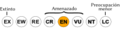

Archivo:Status iucn3.1 EN es.svg
De WikiEVA

Tamaño de esta previsualización: 200 × 50 píxeles. Otra resolución: 320 × 80 píxeles.
{kind=link}
{kind=link}
Archivo original (archivo SVG, nominalmente 200 × 50 píxeles, tamaño de archivo: 27 KB)
Historial del archivo
Haz clic sobre una fecha/hora para ver el archivo a esa fecha.
| Fecha y hora | Miniatura | Dimensiones | Usuario | Comentario | |
|---|---|---|---|---|---|
| actual | 01:04 19 oct 2012 |  | 200 × 50 (27 KB) | Marco Gaiani (Discusión | contribuciones) |
- No puedes sobrescribir este archivo.
Usos del archivo
Hay más de 100 páginas que enlazan con este archivo. La lista siguiente sólo muestra las primeras 100 páginas que enlazan con este archivo. También puedes consultar la lista completa.
- Agalychnis medinae
- Aglaiocercus berlepschi
- Allobates mandelorum
- Amazona barbadensis
- Anolis tetarii
- Ara militaris
- Archilestes tuberalatus
- Aromobates duranti
- Aromobates haydeeae
- Aromobates mayorgai
- Aromobates molinarii
- Aromobates orostoma
- Aromobates saltuensis
- Aromobates serranus
- Astroblepus orientalis
- Astroblepus phelpsi
- Ateles hybridus
- Atherinella venezuelae
- Balaenoptera borealis
- Balaenoptera physalus
- Basileuterus griseiceps
- Brachyplatystoma juruense
- Buteogallus solitarius
- Carcharhinus longimanus
- Caretta caretta
- Catasticta revancha
- Cetopsis motatanensis
- Cetopsorhamdia picklei
- Chaetostoma pearsei
- Charinus tronchonii
- Chelonia mydas
- Cichla ocellaris
- Clytoctantes alixii
- Creagrutus crenatus
- Crocodylus acutus
- Crocodylus intermedius
- Dangond dangondi
- Dermochelys coriacea
- Diaphanos curvignathos
- Diaphanos fuscus
- Diglossa venezuelensis
- Dinomys branickii
- Dupouyichthys sapito
- Farlowella curtirostra
- Farlowella martini
- Farlowella taphorni
- Grallaricula cucullata
- Hapalopsittaca amazonina
- Heteromys oasicus
- Hyalinobatrachium guairarepanensis
- Hylonympha macrocerca
- Laterallus levraudi
- Lepidoblepharis montecanoensis
- Lepidochelys olivacea
- Leptodactylus magistris
- Lonchorhina fernandezi
- Lymanopoda paramera
- Mabuya croizati
- Macrobrachium reyesi
- Macrobrachium rodriguezi
- Mannophryne collaris
- Mannophryne leonardoi
- Mannophryne riveroi
- Marmosops cracens
- Myioborus pariae
- Netta erythrophthalma
- Odocoileus lasiotis
- Odocoileus margaritae
- Oryzomys gorgasi
- Pattonomys flavidus
- Pauxi pauxi
- Philogenia ferox
- Phyllomyias urichi
- Podocnemis erythrocephala
- Podoxymys roraimae
- Priodontes maximus
- Pristimantis bicumulus
- Pristimantis paramerus
- Pristimantis turumiquirensis
- Pteronotus paraguanensis
- Pteronura brasiliensis
- Pyrrhura caeruleiceps
- Rachovia brevis
- Rallus wetmorei
- Redonda bordoni
- Rhinoclemmys diademata
- Rhinoclemmys flammigera
- Rineloricaria caracasensis
- Sciotropis cyclanthorum
- Sciotropis lattkei
- Serrasalmus neveriensis
- Sphyrna lewini
- Steromapedaliodes albarregas
- Steromapedaliodes albonotata
- Steromapedaliodes schuberti
- Thomasomys hylophilus
- Tremarctos ornatus
- Trichomycterus arleoi
- Trichomycterus emanueli
- Trichomycterus meridae
{kind=link}
{kind=link}
{kind=link}
{kind=link}
{kind=link}
{kind=link}
{kind=link}
{kind=link}